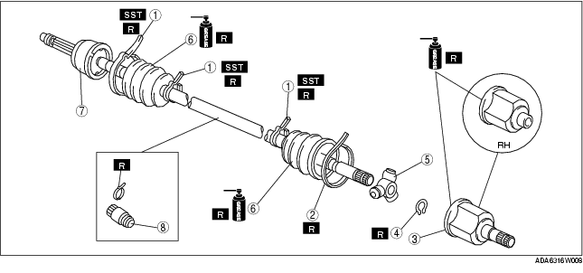
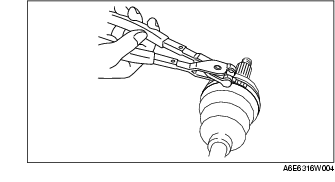
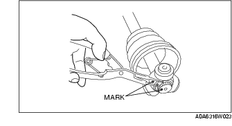
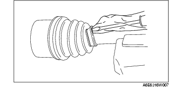
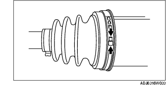
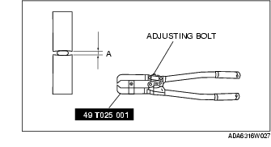

Drive shaft disassembly/assembly
1. Disassemble in the order indicated in the table.
2. Assemble in the reverse order of disassembly.

|
1
|
Boot band (wheel side, transaxle side smaller diameter)
|
|
2
|
Boot band (transaxle side larger diameter)
|
|
3
|
Outer ring
(See Outer Ring Assembly Note)
|
|
4
|
Snap ring
|
|
5
|
Tripod joint
|
|
6
|
Boot
(See Boot Disassembly Note)
(See Boot Assembly Note)
|
|
7
|
Shaft and ball joint component
|
|
8
|
Dynamic damper
|
Boot Band (Wheel Side, Transaxle Side Smaller Diameter) Disassembly Note
1. Remove the boot band using an end clamp plier.

Boot Band (Transaxle Side Larger Diameter) Disassembly Note
1. Pry up the points indicated in the figure using a plier, and remove the boot band.

Outer Ring Disassembly Note
1. Mark the drive shaft and outer ring.

2. Remove the outer ring.
Snap Ring And Tripod Joint Disassembly Note
1. Mark the shaft and tripod joint.
2. Remove the snap ring using a snap ring plier.

3. Remove the tripod joint from the shaft.
Boot Disassembly Note
1. Wrap the shaft splines with tape.

2. Remove the boot.
Dynamic Damper Assembly Note
1. Install the dynamic damper as shown in the figure.

Length
2. Install a new boot band to the dynamic damper.
Boot Assembly Note
1. Fill the inside of the new dust boot (wheel side) with grease.
- • Do not touch the grease with your hand. Apply it from the tube to prevent foreign matter from entering the boot.
2. Install the boot with the splines of the shaft still wrapped in tape from disassembly.
3. Remove the tape.
Tripod Joint And Snap Ring Assembly Note
1. Align the marks and insert the tripod joint using a bar and a hammer.

2. Insert a new snap ring using a snap ring plier.
Outer Ring Assembly Note
1. Fill the outer ring and boot (transaxle side) with the specified grease.
- • Do not touch the grease with your hand. Apply it from the tube to prevent foreign matter from entering the boot.
2. Assemble the outer ring.
3. Set the drive shaft to the standard length.
Drive shaft length- ZY (MTX, LH): 645.0-655.0 mm {25.40-25.78}
- ZY (MTX, RH): 538.5-648.5 mm {21.21-25.53}
- ZY (ATX, LH): 630.0-640.0 mm {24.81-25.19}
- ZY (ATX, RH): 537.6-547.6 mm {21.17-21.55}
4. Release any trapped air from the boots by carefully lifting up the small end of each boot with a cloth wrapped screwdriver.

5. Verify that the drive shaft length is within the standard under atmospheric pressure inside the boot.
Boot Band (Transaxle Side Larger Diameter) Assembly Note
1. Pry up the points indicated in the figure using a plier, and tighten the boot band.

Boot Band (Wheel Side, Transaxle Side Smaller Diameter) Assembly Note
1. Adjust clearance A by turning the adjusting bolt of the SST.

Clearance A
2. Crimp the wheel side small boot band completely using the SST.

3. Verify that the boot band does not protrude from the boot band installation area.
4. Fill the boot with the repair kit grease.
5. Adjust clearance A by turning the adjusting bolt of the SST.
Clearance A6. Crimp the wheel side large boot band completely using the SST.
7. Verify that the boot band does not protrude from the boot band installation area.